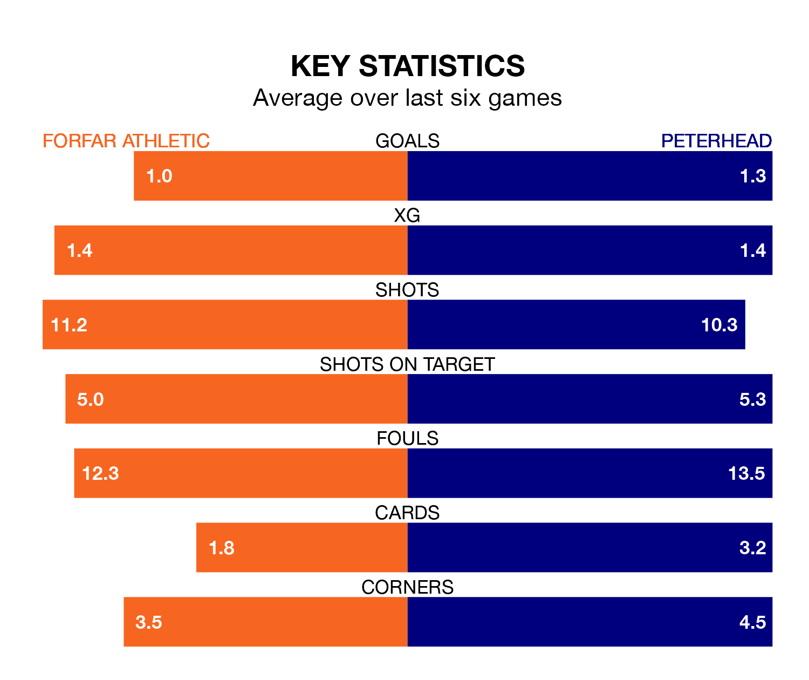

Mid-season relegation candidates Forfar Athletic face a challenge against high-flying Peterhead at Station Park on Saturday.
Forfar Athletic are ninth in the League Two table, and have picked up five wins and 10 draws in their 23 games to date.
The Blue Toon, meanwhile, are second in the standings with 40 points, having won 12 and drawn four, and are 16 points behind table-toppers Stenhousemuir.
With 23 goals in 23 games so far this season, Forfar are the league's second-lowest scorers with 1.0 goals per game. But they are conceding fewer than average too, letting in 28 goals at a rate of 1.2 per game.
Peterhead, meanwhile, are above average scorers, with 1.7 goals per game, compared to a league average of 1.3. They have conceded 1.1 goals per game.
With Marc McCallum between the sticks, Athletic can rely on one of the league's safest pair of hands. He has kept eight clean sheets in his 23 appearances this season, and only one other 'keeper – Stenhousemuir's Darren Jamieson – has been able to prevent the opposition scoring on more occasions in League Two.
In the Blue Toon's net, Stuart McKenzie has four clean sheets in 22 games.
In the last 10 years, Forfar and Peterhead have played each other on 17 occasions. They won seven each, and they drew three times.
On average, the Loons scored 1.3 goals and the Blue Toon 1.4 in those matches.
Their last meeting was on December 23, when Forfar won 2-1 away.
The Loons are in mixed form in League Two, with two wins and three draws from their last six games.
With two wins and two draws over that period, the visitors' form is slightly worse – they have taken eight points from 18, compared to the home team's nine.
Forfar's last match was on February 10, a 2-2 draw against Dumbarton, with Rayan Mohammed and Stuart Morrison getting the goals for the Loons.
Peterhead drew 1-1 with Clyde last time out, on February 3, with Rory McAllister on the scoresheet.
Updated: 09:02 (UTC), 13/02/24